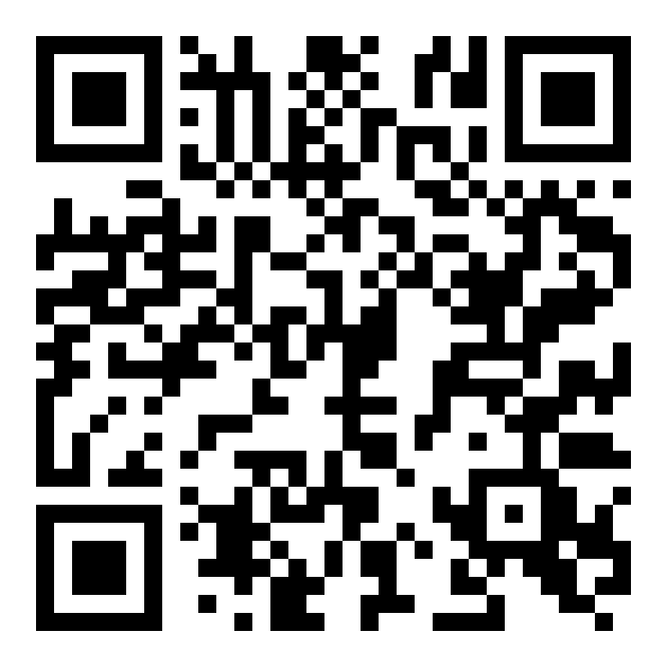
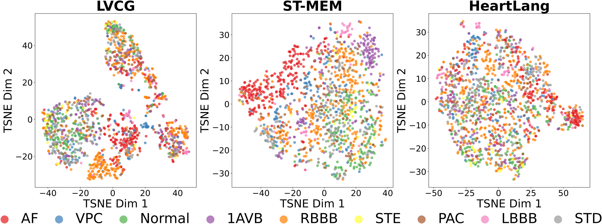

Learning Cardiac Latent Representations in Vectorcardiogram Space

Existing ECG representation learning operates almost entirely in the raw signal space, treating leads as independent channels. Yet the 12-lead ECG is just multiple linear projections of one underlying 3D cardiac electrical field — the vectorcardiogram (VCG).

- Physical inconsistency. Treating leads as independent ignores the linear lead-field dependencies, yielding patterns inconsistent with real cardiac activity.
- Feature–geometry entanglement. Waveform morphology depends on electrode placement & body conductivity, so encoders overfit the acquisition setup and generalize poorly across subjects and devices.
Prior VCG work targets lead synthesis only — VCG space as a general representation-learning bottleneck stays unexplored. We close that gap.
Self-supervised multi-lead reconstruction: hide leads, recover them through the latent VCG space.
Fixed $\mathbf{A}$ decouples geometry from learning; one VCG token per beat forces a compact code.
SSL pretext: observe $K$ leads, reconstruct the full 12-lead ECG. On PTB, LVCG cuts reconstruction MSE 3.3× vs Nef-Net (0.47 vs 1.56).
| (3→12) | CPSC MSE↓ | CPSC MAE↓ | PTB MSE↓ | PTB MAE↓ |
|---|---|---|---|---|
| Nef-Net | 0.68 | 0.40 | 1.56 | 0.52 |
| LVCG | 0.49 | 0.37 | 0.47 | 0.36 |
Linear probing across six datasets after self-supervised pretraining on MIMIC-IV-ECG; we report mean test AUC at three label fractions.
| Method (avg AUC) | 1% | 10% | 100% |
|---|---|---|---|
| ST-MEM | 56.42 | 63.39 | 69.60 |
| HeartLang | 63.80 | 73.39 | 84.56 |
| LVCG (ours) | 67.30 | 74.54 | 80.47 |
On the shifted external sets, LVCG wins the low-label regime: +10.6 AUC on CPSC@1% and +4.5 on CSN@1% over the best SSL baseline.

Frozen ECG embeddings transfer beyond the heart — AUC at 1% labels (MIMIC-IV-ICD).
| AUC @1% | Kidney | Diabetes | Sepsis |
|---|---|---|---|
| HeartLang | 58.92 | 60.41 | 69.02 |
| LVCG | 69.04 | 63.51 | 71.68 |
LVCG tops HeartLang by +10.1 AUC on kidney disease. Ablations: removing, learning, or shuffling the VCG transform degrades sharply — geometry is load-bearing; the bottleneck & temporal model add the rest.